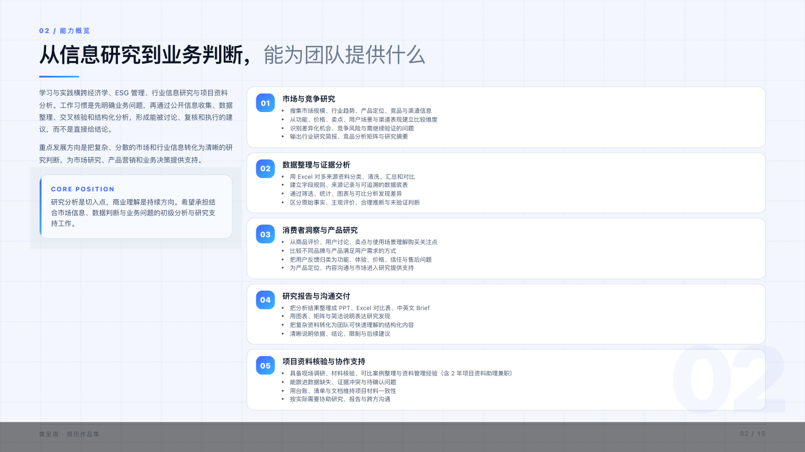
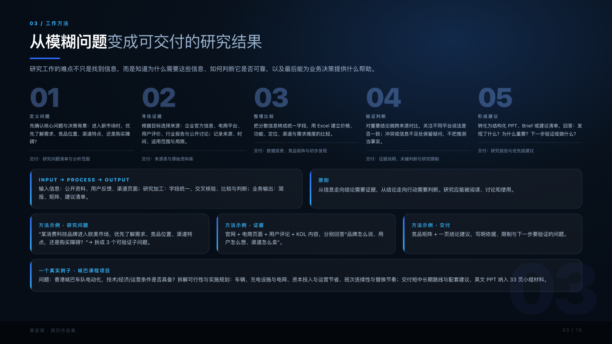
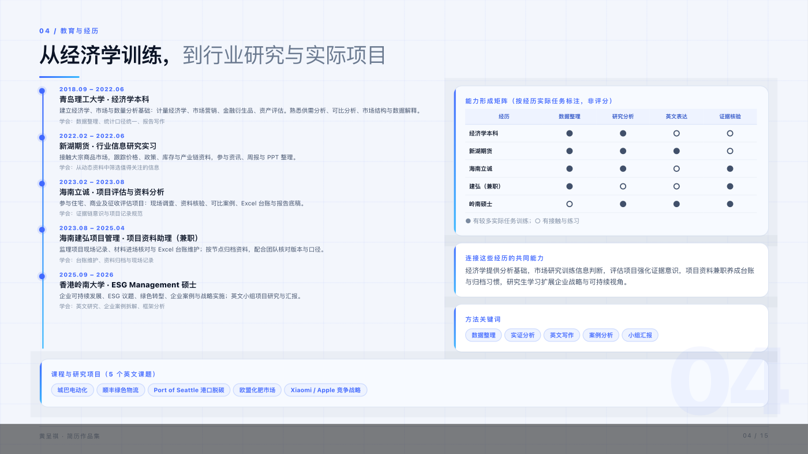
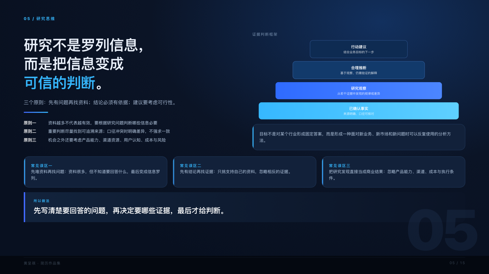
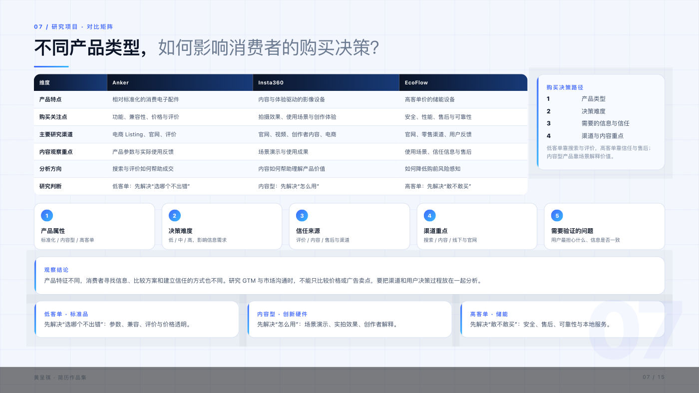
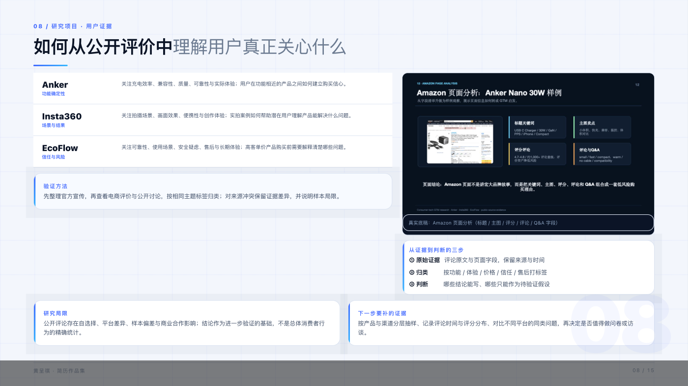
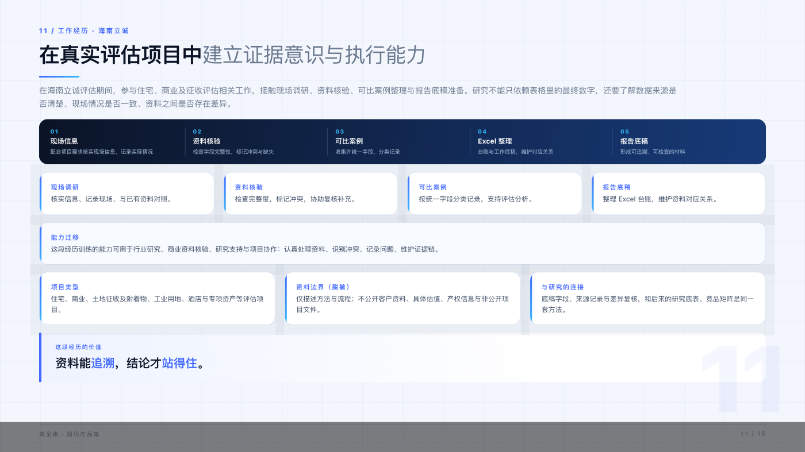
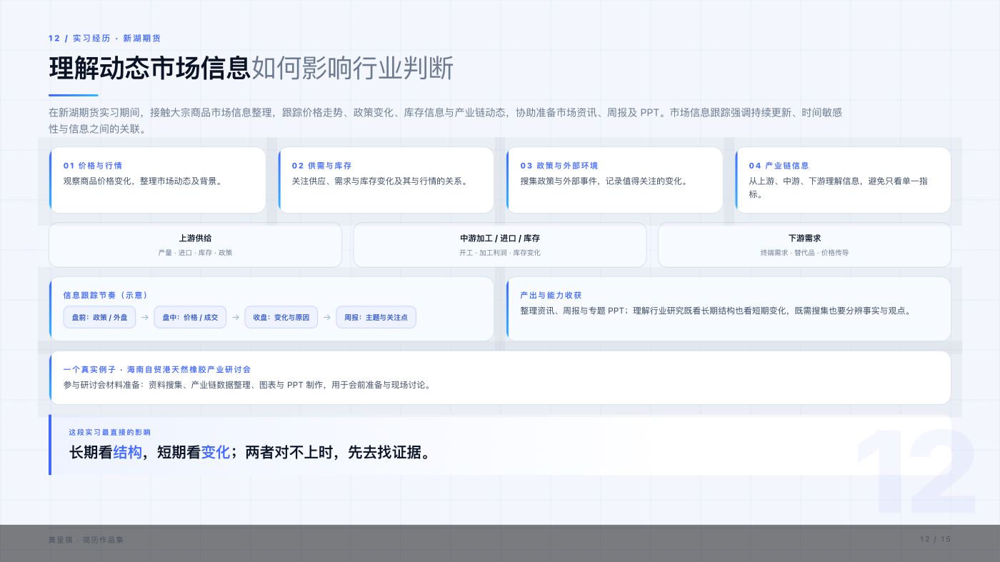

06 · 作品正文
12 页精简版 · 可在线阅读
点击任意一页查看大图；完整 PDF 见页面顶部按钮。












Anker / Insta360 / EcoFlow 案例分析：从产品定位、渠道组合到 GTM 策略的对比研究。
先解决「选哪个不出错」：参数、兼容、搜索、评价。用户在功能接近的产品之间建立购买信心。
对应职责：市场数据分析、竞品分析先解决「怎么用」：场景演示、实拍、创作者内容。产品价值需要通过体验与内容被理解。
对应职责：用户洞察、内容与 GTM先解决「敢不敢买」：安全、可靠性、售后、本地服务。购买前需要更多信任信息。
对应职责：行业研究、机会判断竞争还发生在品牌信任、内容传播、购买渠道与用户场景中。按「产品属性与购买决策路径」选样，而不是按知名度：Anker 相对标准化、Insta360 内容与体验驱动、EcoFlow 高客单价。先判断「产品是怎么被购买的」，再判断「它应该怎么被卖」。
按产品、价格、渠道、内容、用户场景与风险建立统一字段，再做横向比较与交叉核验；来源冲突保留差异，不硬凑一致。
需求、场景、定位、价格与卖点、渠道、内容、竞品差异、增长风险。
官网/公开披露核参数与渠道；电商页面看信息结构、价格与评价；评论/评测/KOL 看用户疑虑与场景理解。
用户反馈只能说明「在意什么」，不能等同销量；评分/评论数 ≠ 销量。样本与平台差异会影响结论。
样本：40+ 公开来源（品牌官网、Amazon / Best Buy、YouTube、Reddit 与公开报告），15+ 代表产品，7 张 Sheet 底稿；公开评论存在自选择、平台差异、样本偏差与商业合作影响，结论作为进一步验证的基础。
| 维度 | Anker | Insta360 | EcoFlow |
|---|---|---|---|
| 产品特点 | 相对标准化的消费电子配件 | 内容与体验驱动的影像设备 | 高客单价的储能设备 |
| 购买关注点 | 功能、兼容性、价格与评价 | 拍摄效果、使用场景与创作体验 | 安全、性能、售后与可靠性 |
| 主要渠道 | 电商 Listing、官网、评价 | 官网、视频、创作者内容、电商 | 官网、零售渠道、用户反馈 |
| 分析方向 | 搜索与评价如何帮助成交 | 内容如何帮助理解产品价值 | 如何降低购前风险感知 |
| 研究判断 | 低客单：先解决「选哪个不出错」 | 内容型：先解决「怎么用」 | 高客单：先解决「敢不敢买」 |
第 1–2 周：补齐市场与竞品数据；第 3–4 周：把结论转成可验证的内容/渠道假设；第 5–6 周：小规模验证并复盘。
点击任意一页查看大图；完整 PDF 见页面顶部按钮。








7 张表的数据底稿：品牌概览、产品与竞品数据库、电商与零售页面分析、渠道矩阵、内容与 KOL 分析、洞察总结、来源记录。40+ 条资料逐条留出处，关键结论可回溯到原始页面。
PDF，适合投递与 15 分钟讲解。
Excel，含来源、字段与交叉核验记录。
一页英文摘要，适合外企/跨境岗位。